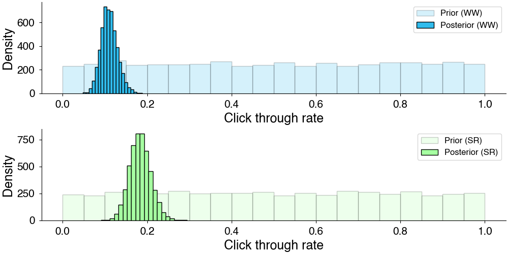
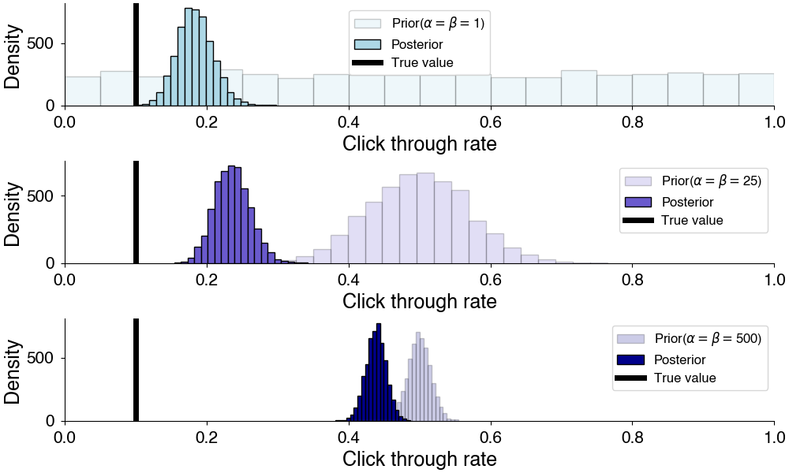
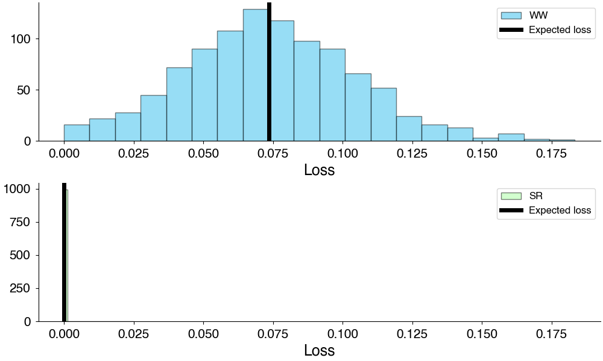
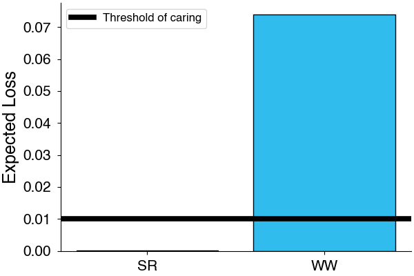

Choosing between alternatives is a fairly common task in daily life. Oftentimes, we want to develop some notion of how and why one alternative may be better than another. In the absence of data, we can design and run tests on these alternatives to better understand them.
In the arena of business decision-making, we often have some metric of interest. This may be the click-through rate on an ad, the color of a button, article headlines, or comparing coupon-types. These examples all fall into the larger bucket of .
Today, we’ll focus on a pretty fun synthetic example to illustrate how we might begin to A/B test.
Let’s suppose that we’re a rollerskating retailer who is testing out two ad variants in anticipation for the inevitable global resurgence of roller skating.
We have two ad variants prepared. The first ad variant (Winter Wonderland) features Mariah Carey in a parka rollerskating in a snow globe. The second ad variant (Summer Renaissance) features Beyonce rollerskating beachside on a sunny day.
Collecting data
We want to collect some data here to see how each of the ads perform, so we run a test where we try out each ad variant on customers over some period of time.
Before customers are shown an ad, we randomize which ad variant they are shown and keep track of both how many times the ad is shown (impressions) and how many times it is clicked (clicks). This is to ensure that we’re getting a good sample of each ad across all potential customers which may differ in their underlying click-through rates.
After this process, we may get data that looks something like this.
clicks
impressions
variant
2
120
WW
3
143
SR
We now need to analyze this data to get some idea of the .
Estimating click-through rate
The variable of interest here is the click-through rate. We want to pick the ad variant which maximizes the click-through rate.
We can estimate the click-through rate by treating the number of clicks as a binomial distribution. We can think of this as the number of clicks assuming that each time the is shown it is clicked with some probability, so that we have
This is an example of conjugate priors which you can read more about here. Typically, \(\alpha = \beta = 1\) is used for the prior here and acts a weak uniform prior on the click-through rate.

Prior and posterior estimates of click-through rate from above model.
However, the choice of prior does matter here. The choice of prior can bias or regularize your results towards particular values. This is useful when you have a strong idea or prior expectation for the values of your parameters. For example, if prior experiments tell you that your click-through rate is between 0.01 and 0.23, it might be useful to encode this as prior information.

Changing prior affects the computed posterior distribution.
Which is better?
We’ve shown that we can use this model to estimate the click-through rate, but this doesn’t answer the question we actually care about i.e. “Which one should we choose?”
We can begin by sampling the difference between the click-through rates of the alternatives. This is called the lift.
In our case, since we have random samples of the CTR from each options, we can compute a distribution of lift by computing lift from individual samples from our posterior distributions.
Computed lift from posterior samples of CTR.
This is step one: we now have reduced the posterior into a metric that we care about. The next step is figuring out how to make a decision based on this metric.
Decision theory and expected loss
We can think of this in terms of minimizing the loss in outcome from choosing a particular option. To apply this to our example, we might ask, “What would we lose if we choose Winter Wonderland as our main ad campaign?”. Well, this will be the lift of the best option over winter wonderland.
where we’ve computed the loss for each posterior sample \(s\).

Loss computed among alternatives.
Now that we understand how much we can expect to lose by selecting an option, we have to decide when it is it worth it to switch. For example, if we only stand to make $2 from the change, it probably isn’t worth because the alternatives may be practically equivalent. This is where the idea of the threshold of caring comes in. The threshold of caring determines the level of expected loss below which you consider alternatives practically indistinguishable. This also has the effect of being a check on the acceptability of an outcome since alternatives below this threshold are the best alternatives given that threshold. In practice, the threshold of caring can be determined by considering the practical consequences of alternatives e.g. considering lift and loss in terms of revenue.

Expected loss and threshold of not caring. Outcomes below the threshold are acceptable outcomes.
Since the expected loss of Summer Renaissance is below the threshold of caring, we can say that Summer Renaissance is an acceptable outcome and choose that as our final outcome. If there were multiple acceptable outcomes, we could simply take the one with the lowest expected loss.
Implementation in Python
We can wrap all these ideas into a simple class that runs this rate experiment:
Show the code
from scipy.stats import beta, beta_genimport numpy as npimport pandas as pdclass SimpleRateExperiment:""" A class to conduct Bayesian A/B testing for categorical experiment outcomes based on rate metrics such as click-through rates. This class calculates the posterior distributions for conversion rates using a Beta distribution, samples from these distributions to estimate performance differences (lifts), and then makes decisions based on expected losses and specified thresholds of caring. """def__init__(self, counts: str, totals: str, group: str, a_prior: int=1, b_prior: int=1, size: int=1000):""" Constructs all the necessary attributes for the SimpleRateExperiment object. Parameters: counts (str): The column name for the count of successes (e.g. clicks). totals (str): The column name for the total attempts (e.g. impressions). group (str): The column name to group data by, typically representing different experiment variants. a_prior (int): The alpha parameter of the prior Beta distribution (default 1). b_prior (int): The beta parameter of the prior Beta distribution (default 1). size (int): The number of samples to draw from each posterior (default 1000). """self.counts, self.totals = counts, totalsself.group = groupself.a_prior = a_priorself.b_prior = b_priorself.size = sizeself.posterior: dict[str, beta_gen] = {}self.samples: dict[str, np.ndarray] = {}self.expected_losses: dict[str, float] = {}def _compute_posterior(self, data: pd.DataFrame):""" Computes the posterior distribution of each group using the Beta distribution based on the provided data. Parameters: data (DataFrame): Pandas DataFrame containing experiment data with columns for counts and totals. """for name, group in data.groupby(self.group):self.posterior[name] = beta(self.a_prior + group[self.counts], self.b_prior + group[self.totals] - group[self.counts])def _sample_posterior(self):""" Samples from the posterior distributions of each group. """for name, post inself.posterior.items():self.samples[name] = post.rvs(self.size)def _compute_lift(self, current: str, alternative: str) -> np.ndarray:""" Computes the lift of an alternative group over the current group by calculating the difference in samples from their posterior distributions. Parameters: current (str): The current group name. alternative (str): The alternative group name to compare against. Returns: np.ndarray: Differences in sample values representing the lift. """returnself.samples[alternative] -self.samples[current]def decide(self, thres_caring: float=0.01):""" Decides the best group based on the expected loss being below a certain threshold. Parameters: thres_caring (float): The threshold below which an alternative's expected loss is considered acceptable. """# Compute expected lossfor current, post inself.posterior.items(): lifts = np.asarray([self._compute_lift(current, alt) for alt inself.posterior.keys()]) self.expected_losses[current] =-(-lifts).min(axis=0).mean()# Check to see which alternatives if any meet threshold of caring threshold_met =Falsefor alt, expected_loss inself.expected_losses.items():if expected_loss < thres_caring:print(f"{alt} is acceptable") threshold_met =Trueif threshold_met:self.decision =min(self.expected_losses, key=self.expected_losses.get)print(f"We choose {self.decision}.")else:print("No alternatives met the threshold of caring.")def run_test(self, data: pd.DataFrame, thres_caring: float=None):""" Executes the test by computing posterior distributions, sampling them, and possibly making a decision based on a threshold. Parameters: data (DataFrame): Pandas DataFrame containing experiment data. thres_caring (float, optional): The threshold of caring to use when making a decision. If None, no decision is made. """self._compute_posterior(data)self._sample_posterior()if thres_caring isnotNone:self.decide(thres_caring)
With this class running an experiment becomes as simple as loading our data and using the run_test method:
This post is an introduction to some of the ideas behind A/B testing in a Bayesian framework. There are several common pitfalls that are discussed when it comes to A/B testing such as the effects of peeking which we do not discuss here. Today, I’m focusing on applying the ideas of Bayesian decision theory to the simplest type of Bayesian A/B test where we have nice likelihood which allow us to take advantage of conjugate priors. I plan to discuss extensions to this method in the future including real-time allocation of variations with multi-armed bandits. For now, I hope you have enjoyed this post and I look forward to writing more on this topic in the future.